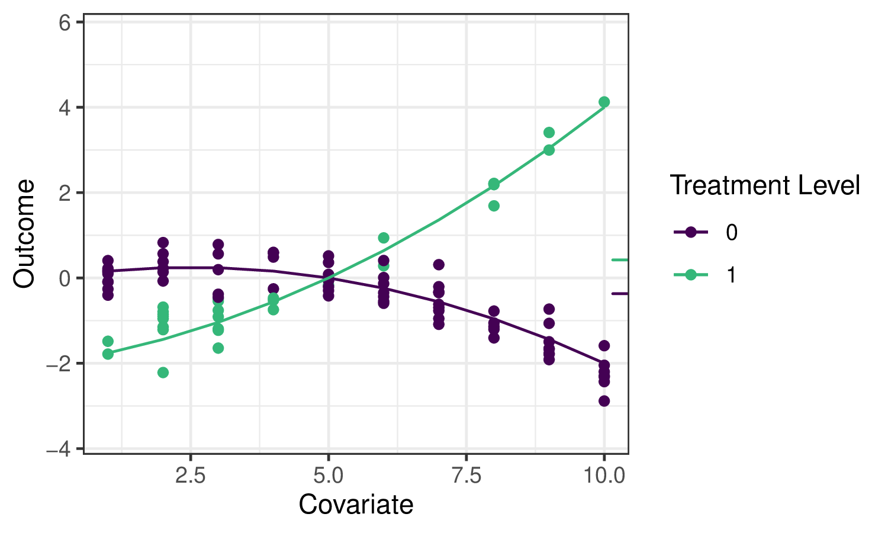

4 The TMLE Framework
Jeremy Coyle
Based on the tmle3 R package.
4.1 Learning Objectives
By the end of this chapter, you will be able to
- Understand why we use TMLE for effect estimation.
- Use
tmle3to estimate an Average Treatment Effect (ATE). - Understand how to use
tmle3“Specs” objects. - Fit
tmle3for a custom set of target parameters. - Use the delta method to estimate transformations of target parameters.
4.2 Introduction
In the previous chapter on sl3 we learned how to estimate a regression function like \(\mathbb{E}[Y \mid X]\) from data. That’s an important first step in learning from data, but how can we use this predictive model to estimate statistical and causal effects?
Going back to the roadmap for targeted learning, suppose we’d like to estimate the effect of a treatment variable \(A\) on an outcome \(Y\). As discussed, one potential parameter that characterizes that effect is the Average Treatment Effect (ATE), defined as \(\psi_0 = \mathbb{E}_W[\mathbb{E}[Y \mid A=1,W] - \mathbb{E}[Y \mid A=0,W]]\) and interpreted as the difference in mean outcome under when treatment \(A=1\) and \(A=0\), averaging over the distribution of covariates \(W\). We’ll illustrate several potential estimators for this parameter, and motivate the use of the TMLE (targeted maximum likelihood estimation; targeted minimum loss-based estimation) framework, using the following example data:
The small ticks on the right indicate the mean outcomes (averaging over \(W\)) under \(A=1\) and \(A=0\) respectively, so their difference is the quantity we’d like to estimate.
While we hope to motivate the application of TMLE in this chapter, we refer the interested reader to the two Targeted Learning books and associated works for full technical details.
4.3 Substitution Estimators
We can use sl3 to fit a Super Learner or other regression model to estimate the outcome regression function \(\mathbb{E}_0[Y \mid A,W]\), which we often refer to as \(\overline{Q}_0(A,W)\) and whose estimate we denote \(\overline{Q}_n(A,W)\). To construct an estimate of the ATE \(\psi_n\), we need only “plug-in” the estimates of \(\overline{Q}_n(A,W)\), evaluated at the two intervention contrasts, to the corresponding ATE “plug-in” formula: \(\psi_n = \frac{1}{n}\sum(\overline{Q}_n(1,W)-\overline{Q}_n(0,W))\). This kind of estimator is called a plug-in or substitution estimator, since accurate estimates \(\psi_n\) of the parameter \(\psi_0\) may be obtained by substituting estimates \(\overline{Q}_n(A,W)\) for the relevant regression functions \(\overline{Q}_0(A,W)\) themselves.
Applying sl3 to estimate the outcome regression in our example, we can see that the ensemble machine learning predictions fit the data quite well:

The solid lines indicate the sl3 estimate of the regression function, with the dotted lines indicating the tmle3 updates (described below).
While substitution estimators are intuitive, naively using this approach with a Super Learner estimate of \(\overline{Q}_0(A,W)\) has several limitations. First, Super Learner is selecting learner weights to minimize risk across the entire regression function, instead of “targeting” the ATE parameter we hope to estimate, leading to biased estimation. That is, sl3 is trying to do well on the full regression curve on the left, instead of focusing on the small ticks on the right. What’s more, the sampling distribution of this approach is not asymptotically linear, and therefore inference is not possible.
We can see these limitations illustrated in the estimates generated for the example data:

We see that Super Learner, estimates the true parameter value (indicated by the dashed vertical line) more accurately than GLM. However, it is still less accurate than TMLE, and valid inference is not possible. In contrast, TMLE achieves a less biased estimator and valid inference.
4.4 Targeted Maximum Likelihood Estimation
TMLE takes an initial estimate \(\overline{Q}_n(A,W)\) as well as an estimate of the propensity score \(g_n(A \mid W) = \mathbb{P}(A = 1 \mid W)\) and produces an updated estimate \(\overline{Q}^{\star}_n(A,W)\) that is “targeted” to the parameter of interest. TMLE keeps the benefits of substitution estimators (it is one), but augments the original, potentially erratic estimates to correct for bias while also resulting in an asymptotically linear (and thus normally distributed) estimator that accommodates inference via asymptotically consistent Wald-style confidence intervals.
4.4.1 TMLE Updates
There are different types of TMLEs (and, sometimes, multiple for the same set of target parameters) – below, we give an example of the algorithm for TML estimation of the ATE. \(\overline{Q}^{\star}_n(A,W)\) is the TMLE-augmented estimate \(f(\overline{Q}^{\star}_n(A,W)) = f(\overline{Q}_n(A,W)) + \epsilon
\cdot H_n(A,W)\), where \(f(\cdot)\) is the appropriate link function (e.g., \(\text{logit}(x) = \log(x / (1 - x))\)), and an estimate \(\epsilon_n\) of the coefficient \(\epsilon\) of the “clever covariate” \(H_n(A,W)\) is computed. The form of the covariate \(H_n(A,W)\) differs across target parameters; in this case of the ATE, it is \(H_n(A,W) = \frac{A}{g_n(A \mid W)} - \frac{1-A}{1-g_n(A,
W)}\), with \(g_n(A,W) = \mathbb{P}(A=1 \mid W)\) being the estimated propensity score, so the estimator depends both on the initial fit (by sl3) of the outcome regression (\(\overline{Q}_n\)) and of the propensity score (\(g_n\)).
There are several robust augmentations that are used across the tlverse, including the use of an additional layer of cross-validation to avoid over-fitting bias (i.e., CV-TMLE) as well as approaches for more consistently estimating several parameters simultaneously (e.g., the points on a survival curve).
4.4.2 Statistical Inference
Since TMLE yields an asymptotically linear estimator, obtaining statistical inference is very convenient. Each TML estimator has a corresponding (efficient) influence function (often, “EIF”, for short) that describes the asymptotic distribution of the estimator. By using the estimated EIF, Wald-style inference (asymptotically correct confidence intervals) can be constructed simply by plugging into the form of the EIF our initial estimates \(\overline{Q}_n\) and \(g_n\), then computing the sample standard error.
The following sections describe both a simple and more detailed way of specifying and estimating a TMLE in the tlverse. In designing tmle3, we sought to replicate as closely as possible the very general estimation framework of TMLE, and so each theoretical object relevant to TMLE is encoded in a corresponding software object/method. First, we will present the simple application of tmle3 to the WASH Benefits example, and then go on to describe the underlying objects in greater detail.
4.5 Easy-Bake Example: tmle3 for ATE
We’ll illustrate the most basic use of TMLE using the WASH Benefits data introduced earlier and estimating an average treatment effect.
4.5.1 Load the Data
We’ll use the same WASH Benefits data as the earlier chapters:
Code
library(data.table)
library(dplyr)
library(tmle3)
library(sl3)
washb_data <- fread(
paste0(
"https://raw.githubusercontent.com/tlverse/tlverse-data/master/",
"wash-benefits/washb_data.csv"
),
stringsAsFactors = TRUE
)4.5.2 Define the variable roles
We’ll use the common \(W\) (covariates), \(A\) (treatment/intervention), \(Y\) (outcome) data structure. tmle3 needs to know what variables in the dataset correspond to each of these roles. We use a list of character vectors to tell it. We call this a “Node List” as it corresponds to the nodes in a Directed Acyclic Graph (DAG), a way of displaying causal relationships between variables.
Code
node_list <- list(
W = c(
"month", "aged", "sex", "momage", "momedu",
"momheight", "hfiacat", "Nlt18", "Ncomp", "watmin",
"elec", "floor", "walls", "roof", "asset_wardrobe",
"asset_table", "asset_chair", "asset_khat",
"asset_chouki", "asset_tv", "asset_refrig",
"asset_bike", "asset_moto", "asset_sewmach",
"asset_mobile"
),
A = "tr",
Y = "whz"
)4.5.3 Handle Missingness
Currently, missingness in tmle3 is handled in a fairly simple way:
- Missing covariates are median- (for continuous) or mode- (for discrete) imputed, and additional covariates indicating imputation are generated, just as described in the
sl3chapter. - Missing treatment variables are excluded – such observations are dropped.
- Missing outcomes are efficiently handled by the automatic calculation (and incorporation into estimators) of inverse probability of censoring weights (IPCW); this is also known as IPCW-TMLE and may be thought of as a joint intervention to remove missingness and is analogous to the procedure used with classical inverse probability weighted estimators.
These steps are implemented in the process_missing function in tmle3:
Code
processed <- process_missing(washb_data, node_list)
washb_data <- processed$data
node_list <- processed$node_list4.5.4 Create a “Spec” Object
tmle3 is general, and allows most components of the TMLE procedure to be specified in a modular way. However, most users will not be interested in manually specifying all of these components. Therefore, tmle3 implements a tmle3_Spec object that bundles a set of components into a specification (“Spec”) that, with minimal additional detail, can be run to fit a TMLE.
We’ll start with using one of the specs, and then work our way down into the internals of tmle3.
Code
ate_spec <- tmle_ATE(
treatment_level = "Nutrition + WSH",
control_level = "Control"
)4.5.5 Define the learners
Currently, the only other thing a user must define are the sl3 learners used to estimate the relevant factors of the likelihood: Q and g.
This takes the form of a list of sl3 learners, one for each likelihood factor to be estimated with sl3:
Code
# choose base learners
lrnr_mean <- make_learner(Lrnr_mean)
lrnr_rf <- make_learner(Lrnr_ranger)
# define metalearners appropriate to data types
ls_metalearner <- make_learner(Lrnr_nnls)
mn_metalearner <- make_learner(
Lrnr_solnp, metalearner_linear_multinomial,
loss_loglik_multinomial
)
sl_Y <- Lrnr_sl$new(
learners = list(lrnr_mean, lrnr_rf),
metalearner = ls_metalearner
)
sl_A <- Lrnr_sl$new(
learners = list(lrnr_mean, lrnr_rf),
metalearner = mn_metalearner
)
learner_list <- list(A = sl_A, Y = sl_Y)Here, we use a Super Learner as defined in the previous chapter. In the future, we plan to include reasonable defaults learners.
4.5.6 Fit the TMLE
We now have everything we need to fit the tmle using tmle3:
Code
tmle_fit <- tmle3(ate_spec, washb_data, node_list, learner_list)
print(tmle_fit)
A tmle3_Fit that took 1 step(s)
type param init_est tmle_est se
<char> <char> <num> <num> <num>
1: ATE ATE[Y_{A=Nutrition + WSH}-Y_{A=Control}] -0.003975 0.01089 0.0503
lower upper psi_transformed lower_transformed upper_transformed
<num> <num> <num> <num> <num>
1: -0.0877 0.1095 0.01089 -0.0877 0.10954.5.7 Evaluate the Estimates
We can see the summary results by printing the fit object. Alternatively, we can extra results from the summary by indexing into it:
Code
estimates <- tmle_fit$summary$psi_transformed
print(estimates)
[1] 0.010894.6 tmle3 Components
Now that we’ve successfully used a spec to obtain a TML estimate, let’s look under the hood at the components. The spec has a number of functions that generate the objects necessary to define and fit a TMLE.
4.6.1 tmle3_task
First is, a tmle3_Task, analogous to an sl3_Task, containing the data we’re fitting the TMLE to, as well as an NPSEM generated from the node_list defined above, describing the variables and their relationships.
Code
tmle_task <- ate_spec$make_tmle_task(washb_data, node_list)Code
tmle_task$npsem
$W
tmle3_Node: W
Variables: month, aged, sex, momedu, hfiacat, Nlt18, Ncomp, watmin, elec,
floor, walls, roof, asset_wardrobe, asset_table, asset_chair, asset_khat,
asset_chouki, asset_tv, asset_refrig, asset_bike, asset_moto, asset_sewmach,
asset_mobile, momage, momheight, delta_momage, delta_momheight
Parents:
$A
tmle3_Node: A
Variables: tr
Parents: W
$Y
tmle3_Node: Y
Variables: whz
Parents: A, W4.6.2 Initial Likelihood
Next, is an object representing the likelihood, factorized according to the NPSEM described above:
Code
initial_likelihood <- ate_spec$make_initial_likelihood(
tmle_task,
learner_list
)
print(initial_likelihood)
W: Lf_emp
A: LF_fit
Y: LF_fitThese components of the likelihood indicate how the factors were estimated: the marginal distribution of \(W\) was estimated using NP-MLE, and the conditional distributions of \(A\) and \(Y\) were estimated using sl3 fits (as defined with the learner_list) above.
We can use this in tandem with the tmle_task object to obtain likelihood estimates for each observation:
Code
initial_likelihood$get_likelihoods(tmle_task)
W A Y
<num> <num> <num>
1: 0.000213 0.3391 -0.3324
2: 0.000213 0.3589 -0.9089
3: 0.000213 0.3231 -0.8148
4: 0.000213 0.3215 -0.9472
5: 0.000213 0.3281 -0.6081
---
4691: 0.000213 0.2270 -0.6143
4692: 0.000213 0.2045 -0.2544
4693: 0.000213 0.1980 -0.7783
4694: 0.000213 0.2476 -0.9395
4695: 0.000213 0.1855 -1.00554.6.3 Targeted Likelihood (updater)
We also need to define a “Targeted Likelihood” object. This is a special type of likelihood that is able to be updated using an tmle3_Update object. This object defines the update strategy (e.g., submodel, loss function, CV-TMLE or not).
Code
targeted_likelihood <- Targeted_Likelihood$new(initial_likelihood)When constructing the targeted likelihood, you can specify different update options. See the documentation for tmle3_Update for details of the different options. For example, you can disable CV-TMLE (the default in tmle3) as follows:
Code
targeted_likelihood_no_cv <-
Targeted_Likelihood$new(initial_likelihood,
updater = list(cvtmle = FALSE)
)4.6.4 Parameter Mapping
Finally, we need to define the parameters of interest. Here, the spec defines a single parameter, the ATE. In the next section, we’ll see how to add additional parameters.
Code
tmle_params <- ate_spec$make_params(tmle_task, targeted_likelihood)
print(tmle_params)
[[1]]
Param_ATE: ATE[Y_{A=Nutrition + WSH}-Y_{A=Control}]4.6.5 Putting it all together
Having used the spec to manually generate all these components, we can now manually fit a tmle3:
Code
tmle_fit_manual <- fit_tmle3(
tmle_task, targeted_likelihood, tmle_params,
targeted_likelihood$updater
)
print(tmle_fit_manual)
A tmle3_Fit that took 1 step(s)
type param init_est tmle_est se
<char> <char> <num> <num> <num>
1: ATE ATE[Y_{A=Nutrition + WSH}-Y_{A=Control}] -0.007315 0.01222 0.05063
lower upper psi_transformed lower_transformed upper_transformed
<num> <num> <num> <num> <num>
1: -0.08702 0.1115 0.01222 -0.08702 0.1115The result is equivalent to fitting using the tmle3 function as above.
4.7 Fitting tmle3 with multiple parameters
Above, we fit a tmle3 with just one parameter. tmle3 also supports fitting multiple parameters simultaneously. To illustrate this, we’ll use the tmle_TSM_all spec:
Code
tsm_spec <- tmle_TSM_all()
targeted_likelihood <- Targeted_Likelihood$new(initial_likelihood)
all_tsm_params <- tsm_spec$make_params(tmle_task, targeted_likelihood)
print(all_tsm_params)
[[1]]
Param_TSM: E[Y_{A=Control}]
[[2]]
Param_TSM: E[Y_{A=Handwashing}]
[[3]]
Param_TSM: E[Y_{A=Nutrition}]
[[4]]
Param_TSM: E[Y_{A=Nutrition + WSH}]
[[5]]
Param_TSM: E[Y_{A=Sanitation}]
[[6]]
Param_TSM: E[Y_{A=WSH}]
[[7]]
Param_TSM: E[Y_{A=Water}]This spec generates a Treatment Specific Mean (TSM) for each level of the exposure variable. Note that we must first generate a new targeted likelihood, as the old one was targeted to the ATE. However, we can recycle the initial likelihood we fit above, saving us a super learner step.
4.7.1 Delta Method
We can also define parameters based on Delta Method Transformations of other parameters. For instance, we can estimate a ATE using the delta method and two of the above TSM parameters:
Code
ate_param <- define_param(
Param_delta, targeted_likelihood,
delta_param_ATE,
list(all_tsm_params[[1]], all_tsm_params[[4]])
)
print(ate_param)
Param_delta: E[Y_{A=Nutrition + WSH}] - E[Y_{A=Control}]This can similarly be used to estimate other derived parameters like Relative Risks, and Population Attributable Risks
4.7.2 Fit
We can now fit a TMLE simultaneously for all TSM parameters, as well as the above defined ATE parameter
Code
all_params <- c(all_tsm_params, ate_param)
tmle_fit_multiparam <- fit_tmle3(
tmle_task, targeted_likelihood, all_params,
targeted_likelihood$updater
)
print(tmle_fit_multiparam)
A tmle3_Fit that took 1 step(s)
type param init_est tmle_est
<char> <char> <num> <num>
1: TSM E[Y_{A=Control}] -0.594233 -0.62367
2: TSM E[Y_{A=Handwashing}] -0.618310 -0.64672
3: TSM E[Y_{A=Nutrition}] -0.611155 -0.60612
4: TSM E[Y_{A=Nutrition + WSH}] -0.601548 -0.61139
5: TSM E[Y_{A=Sanitation}] -0.582341 -0.57945
6: TSM E[Y_{A=WSH}] -0.519331 -0.44981
7: TSM E[Y_{A=Water}] -0.567083 -0.53557
8: ATE E[Y_{A=Nutrition + WSH}] - E[Y_{A=Control}] -0.007315 0.01228
se lower upper psi_transformed lower_transformed upper_transformed
<num> <num> <num> <num> <num> <num>
1: 0.02968 -0.68184 -0.5655 -0.62367 -0.68184 -0.5655
2: 0.04163 -0.72831 -0.5651 -0.64672 -0.72831 -0.5651
3: 0.04167 -0.68779 -0.5245 -0.60612 -0.68779 -0.5245
4: 0.04124 -0.69222 -0.5306 -0.61139 -0.69222 -0.5306
5: 0.04210 -0.66197 -0.4969 -0.57945 -0.66197 -0.4969
6: 0.04490 -0.53781 -0.3618 -0.44981 -0.53781 -0.3618
7: 0.03903 -0.61206 -0.4591 -0.53557 -0.61206 -0.4591
8: 0.05063 -0.08694 0.1115 0.01228 -0.08694 0.11154.8 Exercises
4.8.1 Estimation of the ATE with tmle3
Follow the steps below to estimate an average treatment effect using data from the Collaborative Perinatal Project (CPP), available in the sl3 package. To simplify this example, we define a binary intervention variable, parity01 – an indicator of having one or more children before the current child and a binary outcome, haz01 – an indicator of having an above average height for age.
Code
# load the data set
data(cpp)
cpp <- cpp %>%
as_tibble() %>%
dplyr::filter(!is.na(haz)) %>%
mutate(
parity01 = as.numeric(parity > 0),
haz01 = as.numeric(haz > 0)
)- Define the variable roles \((W,A,Y)\) by creating a list of these nodes. Include the following baseline covariates in \(W\):
apgar1,apgar5,gagebrth,mage,meducyrs,sexn. Both \(A\) and \(Y\) are specified above. The missingness in the data (specifically, the missingness in the columns that are specified in the node list) will need to be taking care of. Theprocess_missingfunction can be used to accomplish this, like thewashb_dataexample above. - Define a
tmle3_Specobject for the ATE,tmle_ATE(). - Using the same base learning libraries defined above, specify
sl3base learners for estimation of \(\overline{Q}_0 = \mathbb{E}_0(Y \mid A, W)\) and \(g_0 = \mathbb{P}(A = 1 \mid W)\). - Define the metalearner like below.
Code
metalearner <- make_learner(
Lrnr_solnp,
loss_function = loss_loglik_binomial,
learner_function = metalearner_logistic_binomial
)- Define one super learner for estimating \(\overline{Q}_0\) and another for estimating \(g_0\). Use the metalearner above for both super learners.
- Create a list of the two super learners defined in the step above and call this object
learner_list. The list names should beA(defining the super learner for estimation of \(g_0\)) andY(defining the super learner for estimation of \(\overline{Q}_0\)). - Fit the TMLE with the
tmle3function by specifying (1) thetmle3_Spec, which we defined in Step 2; (2) the data; (3) the list of nodes, which we specified in Step 1; and (4) the list of super learners for estimation of \(g_0\) and \(\overline{Q}_0\), which we defined in Step 6. Note: Like before, you will need to explicitly make a copy of the data (to work arounddata.tableoptimizations), e.g., (cpp2 <- data.table::copy(cpp)), then use thecpp2data going forward.
4.9 Summary
tmle3 is a general purpose framework for generating TML estimates. The easiest way to use it is to use a predefined spec, allowing you to just fill in the blanks for the data, variable roles, and sl3 learners. However, digging under the hood allows users to specify a wide range of TMLEs. In the next sections, we’ll see how this framework can be used to estimate advanced parameters such as optimal treatments and stochastic shift interventions.